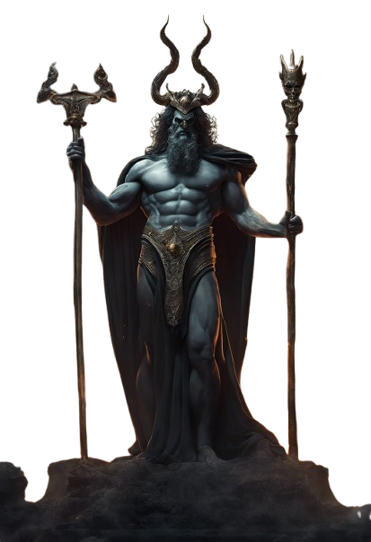

Ele se casou com sua sobrinha Pérsefone, após raptá-la e levá-la para o submundo, mas não teve filhos. Além de governar o reino dos mortos, Hades também foi considerado o guardião das riquezas subterrâneas, como metais preciosos e pedras raras. Por isso, era frequentemente associado à riqueza. Em muitas de suas representações, está acompanhado de um cachorro de três cabeças.
Hades é o deus grego do submundo e dos mortos, também conhecido pelos romanos como Plutão. Filho dos titãs Cronos e Reia, Hades é irmão de Deméter, Zeus, Poseidon, Hera e Héstia.
© 2025 Hades - Deus dos mortos. Todos os direitos reservados.